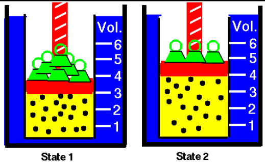

Temperature is associated with the kinetic energy of particles, and often not a system as a whole, as it isn't uniform.
Because a higher temperature creates random molecular movement, we need to draw a distinction between the kinetic energy of the system as a whole and that of its individual particles. This is the difference between regular kinetic energy and thermal energy.Thermal energy is the energy of the random molecular movement in a system, whereas kinetic energy refers to energy associated with any movement.
Heat is different from thermal energy. Although colloquially we say "heat is gained" or "heat is lost", technically heat is simply the transfer of thermal energy. The informal phrase means that the particles lose/gain kinetic energy from the surroundings.
Heat Capacity
The amount of energy required to raise the energy of a system by one degree (Celsius or Kelvin) is called the heat capacity of the system.
The heat capacity of a system is C = q/T, where C is heat capacity, q is heat given, and T is temperature change.
Specific heat capacity measures the amount of energy required to raise the energy of one gram of the substance by one degree. Molar heat capacities refers to the amount of heat required to raise the temperature of one mole of a substance by one degree.
Heat capacities vary according to the state of the substance. Complexity and types of bonds are also factors in deciding the heat capacity of a substance.
Lower molar mass means more atoms in one gram of a substance, which in turn means heat is spread over a larger number of entities, contributing to a higher specific heat capacity.
The first law of thermodynamics
The first law of thermodynamics states that the total energy in the universe remains the same.
This means any heat gained by the system is lost from the surroundings and vice versa, which brings us to a conclusion that the heat gained/lost by the system is the negative of the heat change in the surroundings.
Calorimetry
In calorimetry, scientists examine the amount of heat released/absorbed from a reaction.
In a bomb calorimeter, the reactants are placed in a steel compartment where they react, changing the temperature of surrounding water. Measuring the temperature change and knowing the heat capacity of the calorimeter, you can identify how much heat was lost in the reaction.
In "coffee-cup" calorimetry (chemists on a budget), the reactants are mixed into an aqueous solution and temperature change is measured. Styrofoam is often used because it acts as a heat insulator, isolating the system. Again, heat capacity and the change in temperature are used to determine the energy released in the reaction.
Work done by a reaction
Sometimes the system or the surroundings could do work on each other. Often, this is through a change in volume or pressure, from the behaviour of a gas. This is known as pressure-volume work.
Its value is given by the equation: Work = -External pressure on the gas x the change in volume. The work is negative when energy leaves the system and positive when it enters the system.
If you imagine a piston pulled down by the force of several weights compressing a gas, the gas does work on the piston if a weight is removed. This amount of work is equal to the distance the piston is lifted x the piston's mass x gravity's acceleration. Dividing the force of gravity by the piston's area and multiplying the height lifted by the area rearranges this statement to something more general: negative external pressure x change in volume . 
Internal Energy
Internal energy is the combination of molecular kinetic and potential energy in a system. The kinetic energy includes the movements of the individual particles, being translated, rotated, experiencing vibration or undergoing electrostatic interactions. Not heat or work, these are means of energy transfer.
Internal Energy is a function of state, since it has a particular value depending on the state of the system, and it doesn't depend on the creation of the state of the system.
A positive change in internal energy is net energy entering the system, negative change in internal energy is net energy leaving the system.
Though it is possible to calculate the internal energy in an ideal gas, it is often very difficult to measure the internal energy of a system. However, the internal energy is always proportional to temperature of the system, so you can state that the internal energy of a system increases as temperature increases.
We can precisely measure the change in internal energy. The change in internal energy is defined as the heat released/gained plus any work done/experienced.
Enthalpy
Enthalpy is the combination of the energy within the system + energy from compression/expansion of gasses.
Like internal energy, the enthalpy of a reaction cannot be precisely measured. The change in enthalpy is the heat released by a constant pressure reaction, or the potential energy of products - the potential energy of reactants. This can also be rephrased as the internal energy of a system + its pressure times its volume.
A reaction is therefore exothermic if it has negative change in enthalpy (releases energy), or endothermic if it has positive change in enthalpy (uses more energy than it releases).
This is a function of state; its value doesn't depend on the path taken to get to the state of the function.
The enthalpy of reaction is the enthalpy change per mole of reaction (a mole of reaction is the amount of substance needed for the balanced chemical reaction). The enthalpy of reaction can therefore be used to calculate the enthalpy of the same reaction in different quantities.
Standard Enthalpy of Reaction
The enthalpy change in a reaction where both the reactants and the products are in standard states.
The standard state (defined) for a solid or liquid substance is the pure reactant at a pressure of 1 bar. For a gas, this also includes it behaving as an ideal gas.
This enthalpy does not change depending on temperature.
Hess' Law
In a reaction that can be broken into different steps, the enthalpy of the whole reaction is equal to the sum of the enthalpies of each step (Hess' law), since enthalpy is a function of state.
This allows you to calculate enthalpies of reaction indirectly (or theoretically), when practically it's difficult to pull off an experiment.
Since the standard enthalpy of reaction is the sum of molecules decomposing and forming, it can be expressed as the summation of the standard enthalpies of formation for products - the standard enthalpies of formation for products.
Standard Enthalpy of Formation
The standard enthalpy of formation of a substance is the change in enthalpy when one mole of that substance in the standard state is created from the reference forms of the elements in their standard states.
The reference form of an element is the most stable form of that element in the standard state. For an element in its reference form, the standard enthalpy of formation is 0.
Standard enthalpies of formation can be used to find standard enthalpies of reaction. In a reaction where a large molecule is broken into separate atoms and those atoms recombine, the standard enthalpies of formation can be used to determine the enthalpy change for each step in the reaction, and adding the enthalpy change of each step of the reaction yields the standard enthalpy of reaction (Hess' Law). Thus, you can calculate theoretically the standard enthalpy of reaction from enthalpies of formation.
Combustion of fuel
Substances that yield exothermic reactions when combusted are known as fuels. For their high energy release, many hydrocarbons formed after the slow decomposition of cellulose or organic matter, known as fossil fuels, are popular for creating heat or propulsive energy.
However, the oxides of nitrogen, sulfur, and carbon created in the combustion process prove detrimental to our current environment. The greenhouse effect, acid rain, and poor air quality are all consequences of this combustion.
Mapping out these concepts:
Formulae
Formula #1: Change in internal energy = heat + work
This is a result of the first law of thermodynamics. Since heat and work only occur when there is a transfer of energy between the system and its surroundings, by definition a change in internal energy is the combination of the heat and work created.
Formula #2: Change in energy of the universe = change in energy of the system + change in energy of the surroundings
Another interpretation of the first law. Since energy cannot be created nor destroyed, all energy is constant, meaning any energy change in the system is reciprocated in the surroundings, always totalling the energy of the universe.
Formula #3: Heat capacity = heat absorbed/change in temperature
A fundamental property of all material, which helps in calculating the change in enthalpy of the reaction.
Formula #4: Heat absorbed/released by the system = the negative heat absorbed/released by the surroundings
A third interpretation of the first law. The sum of the change in heat of the surroundings and the system is always zero, and so rearranging we know that they are negatives of each other.
Formula #5: Pressure-volume work = the negative of the external pressure x the change in volume
Work done by a gas to counteract gravity is equal to mg x vertical distance travelled, and multiplying by area/area and rearranging we arrive at this more general equation, which outlines the magnitude of the work done by the compression or expansion of a gas in a reaction.
Formula #6: Change in enthalpy = the heat absorbed/released by a constant pressure system
Since change in enthalpy = change in internal energy + pressure x the change in volume, if pressure is constant, the work and P x V cancel out, leaving only q, heat.
Formula #7: Change in enthalpy = the change in internal energy + pressure x the change in volume
This is the definition of enthalpy. Enthalpy is a function of state, which proves especially useful as it is equal to the heat released/absorbed of a constant pressure system.
Formula #8: The standard enthalpy of a reaction = the summation of the formation enthalpies of the products - the summation of the formation enthalpies of the reactants
This is a rearrangement of Hess' law. Since you can add separate enthalpies of individual steps to arrive at the enthalpy of a reaction, this equation is valid.
Terminology
Calorimetry
Methods of measuring the amount of heat released or absorbed during a chemical reaction.
Enthalpy
The heat released/absorbed by a reaction when pressure is constant or the sum of internal energy and pressure x volume.
Function of state
A property that has a unique value for a specific state of the system. These values depend on the state of the system, not how the system was created.
Joules/Calories
Both are units of energy. A joule is the work done by one newton moving one meter. A calorie is the amount of energy needed to raise one gram of water by one degree Celsius. However, the Joule often takes its place when describing energy, as it is the SI unit for work and energy. Kilojoules are often used rather than joules.
Heat
Energy transferred due to a temperature difference between the system and the surroundings.
Hess' Law
In a reaction that can be broken into different steps, the standard enthalpy of the whole reaction is equal to the sum of the enthalpies of each step.
Heat Capacity
The amount of energy required to raise the energy of a system by one degree (Celsius or Kelvin) is called the heat capacity of the system.
Internal Energy
The sum of all molecular kinetic and potential energy in a system, or heat released/gained + work done/experienced.
Path-dependent functions
Unlike functions of state, the value of these properties depend on the path taken to the current state of the system. These include heat and work.
Pressure-volume work
Work from the expansion/compression of gases in a system. The work of pressure-volume work is given by the equation: Work = -External pressure on the gas x the change in volume. The work is negative when energy leaves the system and positive when it enters the system.
Spontaneous and Nonspontaneous Reactions
Spontaneous Reaction: once started, the reaction will continue unaided
Nonspontaneous Reaction: needs a continual action to be applied to continue
An endothermic reaction can be spontaneous; endothermic and exothermic does not mean nonspontaneous and spontaneous.
Standard Enthalpy of Reaction
The enthalpy change in a reaction where both the reactants and the products are in standard states. The standard state (defined) for a solid or liquid substance is the pure reactant at a pressure of 1 bar. For a gas, this also includes it behaving as an ideal gas.
Standard Enthalpy of Formation
The standard enthalpy of formation of a substance is the change in enthalpy when one mole of that substance in the standard state is created from the reference forms of the elements in their standard states. The reference form of an element is the most stable form of that element in the standard state.
Systems
We can set a boundary between what we want to observe and the environment. What's inside the boundary is called the system.
Open system: Matter and Energy is exchanged between the system and its surroundings
Closed system: Only energy is exchanged between the system and its surroundings
Isolated system: No energy or matter is exchanged between the system and its surroundings
Thermal Energy
Total kinetic energy of the system in molecular motion (due to temperature), different from heat
The Three Laws of Thermodynamics
First Law: Energy is conserved; it cannot be created nor destroyed.
Second Law: The entropy of the universe increases, as energy is wasted; entropy tends to increase.
Third Law: The energy of a perfect crystal is zero when the temperature of the crystal is absolute zero (0 Kelvin)
Practice Problems
The following problems are taken from General Chemistry: Principles and Modern Applications (Petrucci, Herring, Madura, & Bissonnette, 2017).
The combustion of 1.010 g sucrose (C12H22O11) in a bomb calorimeter causes the temperature rise from 24.92 degrees to 28.33 degrees. The heat capacity of the calorimeter is 4.90kJ/Celsius.
a) What is the heat of combustion of sucrose expressed in kJ/mol of sucrose?
b) Verify the claim of sugar producers that one teaspoon of sugar (4.8g) contains only 19 calories.
Using a rearrangement of the C=q/T formula, we can calculate the heat released in the reaction.
The first law states that the energy change in the surroundings is the negative of the energy change in the system.
Next, we should calculate the g/mol of sucrose.
We can then convert kJ/g to kJ/mol.
For part B, convert to kCal:
The standard enthalpies of combustion of C(graphite), hydrogen gas, and C3H8(g) are -393.5, -285.8, and -2219.9 kJ/mol, respectively. Use those values for calculating the standard enthalpy of this reaction:
Write the combustion reactions of each of the molecules mentioned above:
Multiply the formula so that the products can be reactants in the next step:
The products of those reactions (reaction intermediates) react to form our C3H8.Take the known standard enthalpies of combustion and use Hess' law to find reaction enthalpy:
Calculate the standard enthalpy of combustion of ethane. The standard enthalpies of formation of CO2(g), H2O(l), C2H6(g), and O2(g) are -393.5, -285.8, -84.7, and 0 kJ/mol respectively.